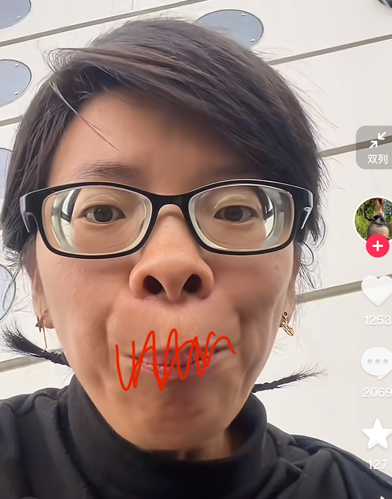
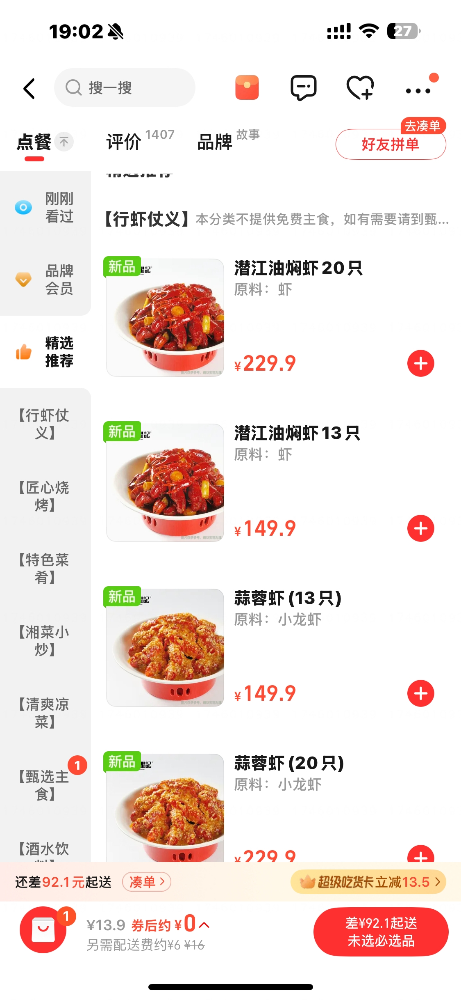
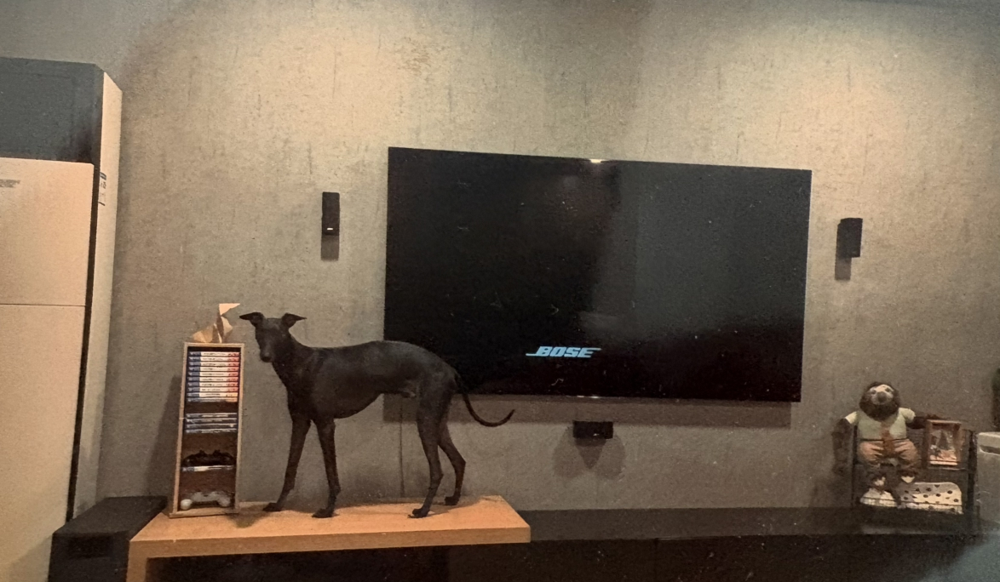
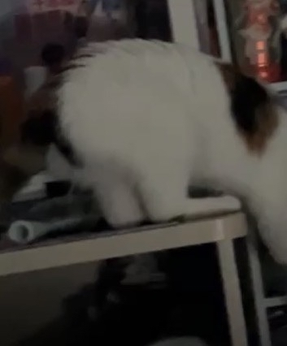

你得这样[九转大肠]
如果是儿子的话爸爸：
难怪以前小时候被打，旁边亲戚都在笑，原来真的看着挺好玩的[捂脸]
爷爷看到视频后，第二天爸爸：
找妈妈没用，应该找爷爷[捂脸][捂脸][捂脸]
爸爸:孩子怎么不和我亲了。
想艾特好友，又觉得他们罪不至死，但朕又何其无辜[微笑]
只能帮你们到这里了兄弟们[泪奔] 
若干年后的课堂上， 学生：[不是吧]老师，这个森林为什么叫塔克拉玛干沙漠啊
后羿射日，精卫填海，女娲补天，愚公移山，我感觉就没有我炎黄子孙干不了的事。[赞][赞][赞]
为什么种的都是枯草，不是绿色的
当年我也是治沙一分子，每年春天我们在沙漠里就拼命的挖坑种树种草，现在几十年过去了当年的沙漠变成了绿洲[调皮][调皮]
不怕富二代败家，就怕富二代有上进心[九转大肠]
孩子，听叔一句劝，你年纪小，把握不住，只要你把企业过继给叔，叔每月给你开工资，长大了再给你娶个媳妇，从此过上衣食无忧得生活！
初三那年 趴在桌子上听着蔡依林的《Love Love Love》 女同桌喂了我一块饼干 我吃完脸红了 然后她咯咯的笑了说是地上捡的 我说没关系 因为是你喂的 阳光余晖洒进教室 我看见她的脸也红了 我扇的[灵机一动]
真怀念和蔡依林同居的日子，我睡床上，她贴在墙上
这个伴舞真的是没有眼力见啊[泪奔][泪奔]蔡依林要跟他互动，结果他跑了，哈哈哈
笑死了 助理：您说断了他的生活费 老爸：娱乐是娱乐 生活是生活[捂脸][捂脸][捂脸]
丁达尔和薛晓舟真的是兄弟[捂脸] 他们两个人有共同的后妈邱丽苏[泪奔]
他为什么会后悔呢？他后悔是因为他后来失败了，如果他成功了，他不会后悔。
我是不是应该把户口迁到海南啊
帮我艾特一下陈楚生 他是我唯一的海南人脉
原来觉得海南十年就能发展成香港那样 前几天我去深圳跟香港玩 接着去飞三亚收房 感觉立马从大都市到了农村 [捂脸]海南人别骂我 因为我也是新海南人 我觉得再有二十年也敢不上深圳更别说香港
听了半天，还是不知道魔鬼鱼为什么是海洋硬通货
爷爷奶奶快来看啊[皱眉]

这时候道长的愁眉苦脸少不了那八千块的锅[看][看]
道长还在为那 8000 块钱耿耿于怀吧[看]
中国版“摔跤吧爸爸”！[赞]
我想知道，她这皮肤长大后真的能白起来吗[捂脸]
树：我没病 啄木鸟：没病走两步
我都是炸好放这个调料一瓶啤酒一瓶水煮熟[泣不成声]
糊涂啊，都不放鹌鹑蛋，玉米，青瓜
长沙瞿记150元16只哈哈哈 
可以用食用的柠檬酸还是啥泡，不需要你一个一个这样刷的[暗中观察]
“我和尸体的区别是什么 “你有一颗温热的心脏”
机器狗，我家也有，摆在那了好多年了[尬笑] 
一开口第一句话身份证就掉出来了
我的新头像
啊啊啊啊啊就是这首歌爱上李昀锐的 终于苦尽甘来了[流泪]
你真的好像在骂闺蜜一样，呜呜呜呜，想要你这样的闺蜜！
感觉被自己的好朋友说了一顿[流泪][流泪][流泪]
为爱情折腰反正是你一直以来的癖好
当时李昀锐唱的这个歌我的印象很深特别喜欢
好强的叙事感[流泪]
好歌就是听厌了，但是很久以后突然听到也会停下来
“老师 你给我听好”[嘿哈]我们创二的兵呢[咒骂]
谁听过张碧晨唱的 就是这种叙事感
还记得当年创造营的时候李昀锐指着导师说你给我听好（这是一首歌）之后笑了一下一直记到了现在
是我们装傻
合照就你一个人笑了你才知道什么叫真正的绝望，还是呲牙笑[憨笑]
如果你是我姐妹，我会要求你睡前跟我打着电话哄我睡觉
太会唱了[流泪][流泪]就是那种情绪递进的感觉啊啊
创造营的时候李昀锐唱了这首歌 老好听了 一下就记着他了[呲牙]
这歌讲的是男人出轨后悔莫及追妻的事
就这个调很有魅力
好棒的嗓音啊[抓狂][抓狂]
真的[泣不成声]每次唱到那我都上不去[泣不成声]
但凡懂一点动物心理学的都知道这个小猫是不开心的，它的微表情都在表示它内心的焦虑，我能很明确的看出来，它想来我家
[玫瑰]需要热度
怪不得猫不爱穿袜子和鞋，谁只穿脚趾头啊[捂脸]
小时候听的歌不是唱了吗“波斯猫垫着它的脚尖”
当时看到这个大脚丫子也是要笑死我了[憨笑] 
Read more: